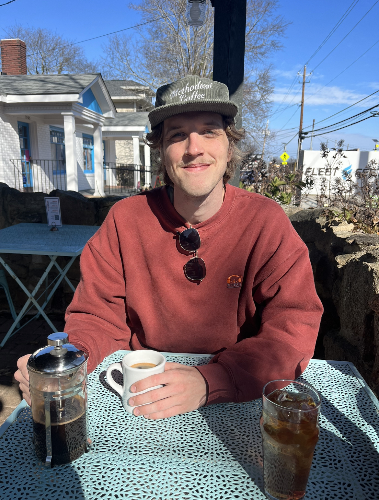
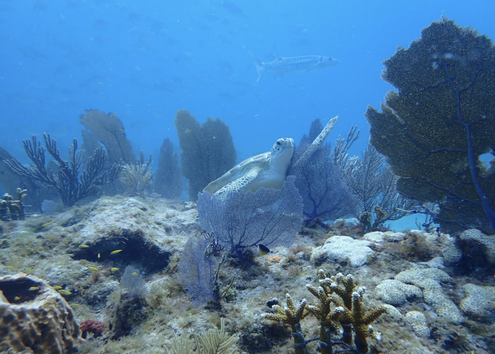

About me
Background:
Who am I, and what do I do?
My name is Nathan Greenslit and I am a second year Master’s student in the Department of Marine Sciences. In December of 2020, I graduated from Clemson University with a Bachelor’s in Biological Sciences. I currently work under the advisement of Dr. Erin Lipp, where my research addresses the cross section between environmental and public health. I am specifically interested in how environmental fluctuations can impact marine pathogen dynamics in coastal waterways, and how microbial blooms can impact both marine and human health.

Previous Statistical and Coding Experience
I have a basal understanding of modern statistical approaches as I have completed a general statistics course during my undergraduate degree and recently completed a Quantitative Methods course past Fall. My first exposure to coding using R was last Spring, when I completed an intensive computation course that helped me gain familiarity with R Markdown, it’s syntax, and the creation of figures using ggplot2. I can comfortably filter through data and create simple figures.
From this course, I hope to become more familiar with coding syntax, and expand upon my ability to produce figures, run models, create websites, work with data, and especially understand when and why we use specific statistical measures.
Interesting Fact:
Before coming to UGA, I worked with a non-profit based in the Florida Keys that focused on scientific communication and coral restoration. My activities included leading a team of divers on a series of “outplant” dives, where we would directly restore species of coral (Staghorn, Elkhorn, Massive Starlet Coral) back out onto the reefs of the Upper Middle Keys.
 This is an image from one of my monitoring dives on Alligator Reef, Islamorada, FL. Our Staghorn outplants are accompanied by a loggerhead sea turtle and a barracuda.
Explaining Machine Learning in 5 Levels of Difficulty
This is a really interesting video where a Computer Scientist explains machine learning at varying levels of difficulty, ranging from a child to an expert. I think that it is equally as important to disseminate your research as it is to conduct it!.